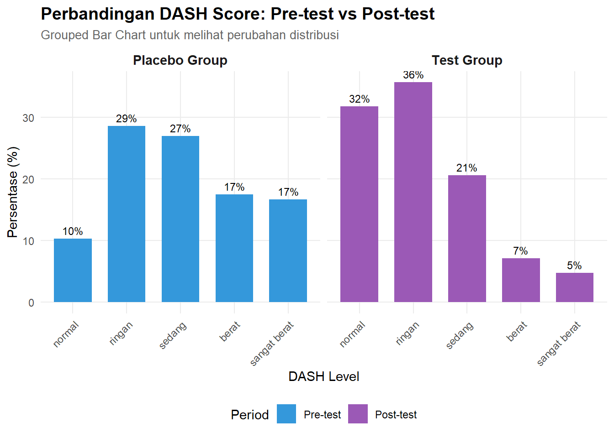
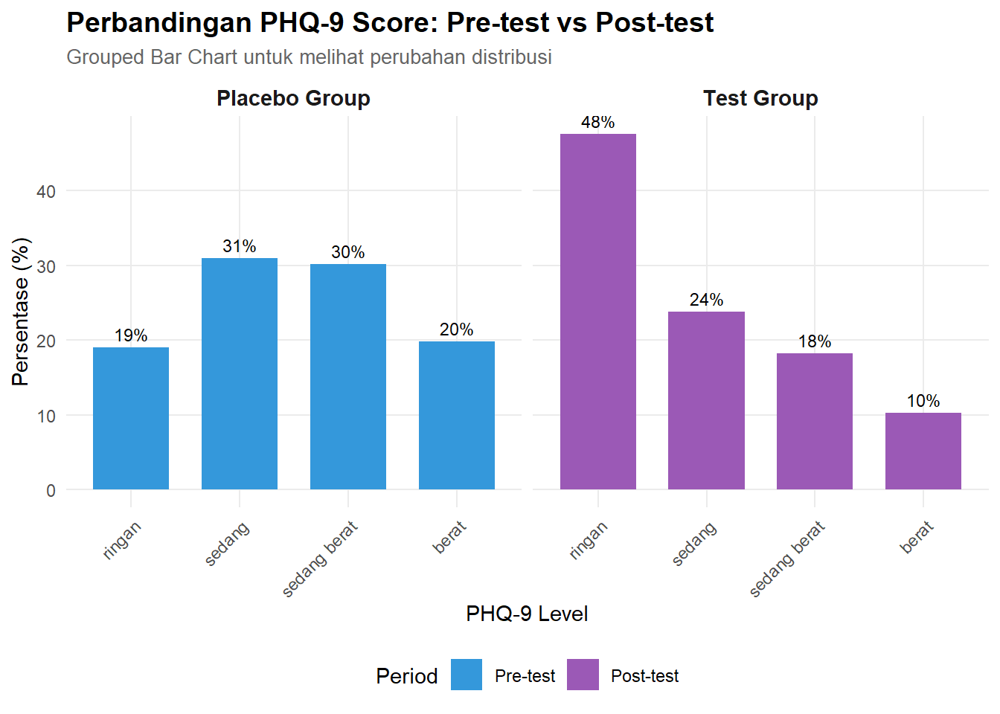
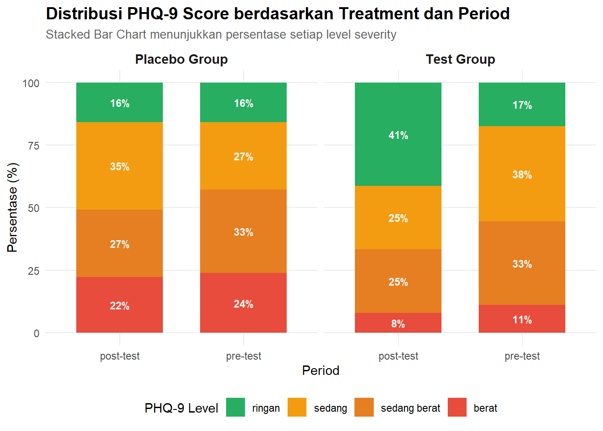
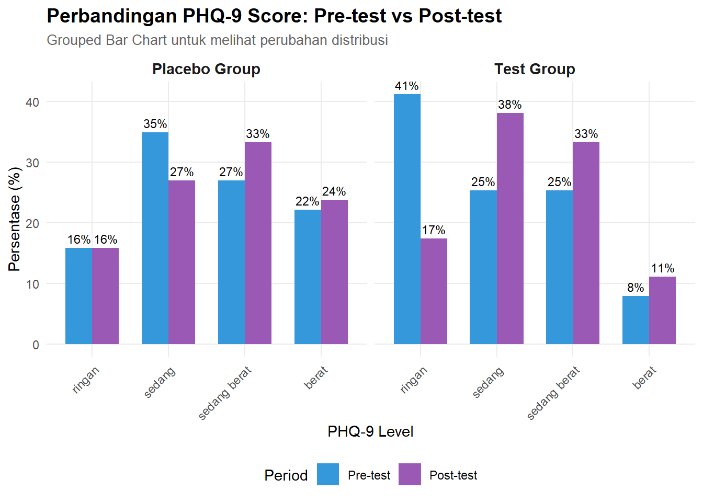
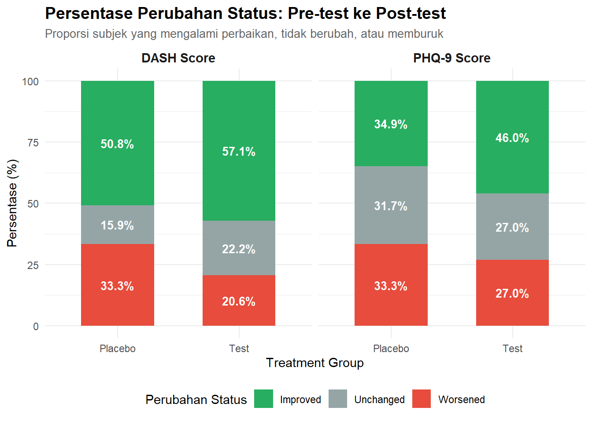

# ============================================================================
# SIMULASI DATA CLINICAL TRIAL - DASH DAN PHQ-9
# ============================================================================
# load libraries yang dibutuhkan
library(ggplot2)
library(dplyr)
Attaching package: 'dplyr'The following objects are masked from 'package:stats':
filter, lagThe following objects are masked from 'package:base':
intersect, setdiff, setequal, unionlibrary(tidyr)
library(gridExtra)
Attaching package: 'gridExtra'The following object is masked from 'package:dplyr':
combinelibrary(scales)
library(ordinal)
Attaching package: 'ordinal'The following object is masked from 'package:dplyr':
slice# ============================================================================
# 1. GENERATE DATA
# ============================================================================
set.seed(123)
n_subj <- 126
id <- 1:n_subj
# Perbaikan: buat assignment treatment per subjek
treatment <- rep(c("placebo", "test"), each = n_subj/2)
# Buat data long format dengan benar
data_sim <- data.frame(
id = rep(id, each = 2),
period = rep(c("pre-test", "post-test"), times = n_subj)
)
# Assign treatment berdasarkan id subjek
data_sim$treatment <- ifelse(data_sim$id <= n_subj/2, "placebo", "test")
dash_levels <- c("normal", "ringan", "sedang", "berat", "sangat berat")
phq_levels <- c("ringan", "sedang", "sedang berat", "berat")
# Fungsi sampling yang diperbaiki
sample_dash <- function(trt, period) {
# Pre-test: kedua kelompok memiliki distribusi yang sama
if (period == "pre-test") {
sample(dash_levels, 1, prob = c(0.10, 0.25, 0.30, 0.20, 0.15))
}
# Post-test: kelompok test menunjukkan perbaikan
else if (trt == "test" && period == "post-test") {
sample(dash_levels, 1, prob = c(0.35, 0.30, 0.20, 0.10, 0.05))
}
# Post-test: kelompok plasebo relatif stabil
else {
sample(dash_levels, 1, prob = c(0.12, 0.25, 0.28, 0.20, 0.15))
}
}
sample_phq <- function(trt, period) {
# Pre-test: kedua kelompok memiliki distribusi yang sama
if (period == "pre-test") {
sample(phq_levels, 1, prob = c(0.20, 0.30, 0.30, 0.20))
}
# Post-test: kelompok test menunjukkan perbaikan
else if (trt == "test" && period == "post-test") {
sample(phq_levels, 1, prob = c(0.40, 0.30, 0.20, 0.10))
}
# Post-test: kelompok plasebo relatif stabil
else {
sample(phq_levels, 1, prob = c(0.22, 0.30, 0.28, 0.20))
}
}
data_sim$dash <- mapply(sample_dash, data_sim$treatment, data_sim$period)
data_sim$phq_9 <- mapply(sample_phq, data_sim$treatment, data_sim$period)
data_sim$dash <- factor(data_sim$dash, levels = dash_levels, ordered = TRUE)
data_sim$phq_9 <- factor(data_sim$phq_9, levels = phq_levels, ordered = TRUE)
# Cek struktur data
print(head(data_sim, 20)) id period treatment dash phq_9
1 1 pre-test placebo sedang sedang berat
2 1 post-test placebo sangat berat sedang
3 2 pre-test placebo ringan sedang berat
4 2 post-test placebo normal ringan
5 3 pre-test placebo normal sedang
6 3 post-test placebo sedang sedang berat
7 4 pre-test placebo ringan sedang berat
8 4 post-test placebo normal berat
9 5 pre-test placebo berat ringan
10 5 post-test placebo ringan berat
11 6 pre-test placebo normal berat
12 6 post-test placebo ringan berat
13 7 pre-test placebo berat sedang berat
14 7 post-test placebo berat sedang berat
15 8 pre-test placebo sedang sedang berat
16 8 post-test placebo normal sedang berat
17 9 pre-test placebo sedang sedang
18 9 post-test placebo sedang sedang berat
19 10 pre-test placebo ringan ringan
20 10 post-test placebo normal sedang# Verifikasi distribusi treatment
print("\n=== Verifikasi Treatment Assignment ===")[1] "\n=== Verifikasi Treatment Assignment ==="print(table(data_sim$period, data_sim$treatment))
placebo test
post-test 63 63
pre-test 63 63# Verifikasi sebaran
print("\n=== Sebaran DASH ===")[1] "\n=== Sebaran DASH ==="print(ftable(treatment ~ period ~ dash, data = data_sim)) period post-test pre-test
dash
normal 30 11
ringan 38 38
sedang 34 35
berat 15 25
sangat berat 9 17print("\n=== Sebaran PHQ-9 ===")[1] "\n=== Sebaran PHQ-9 ==="print(ftable(treatment ~ period ~ phq_9, data = data_sim)) period post-test pre-test
phq_9
ringan 36 21
sedang 38 41
sedang berat 33 42
berat 19 22# ============================================================================
# 2. ANALISIS MODEL
# ============================================================================
model_dash <- clmm(
dash ~ treatment * period + (1 | id),
data = data_sim,
link = "logit"
)
summary(model_dash)Cumulative Link Mixed Model fitted with the Laplace approximation
formula: dash ~ treatment * period + (1 | id)
data: data_sim
link threshold nobs logLik AIC niter max.grad cond.H
logit flexible 252 -378.81 773.62 415(842) 6.93e-05 6.1e+01
Random effects:
Groups Name Variance Std.Dev.
id (Intercept) 0.2975 0.5454
Number of groups: id 126
Coefficients:
Estimate Std. Error z value Pr(>|z|)
treatmenttest -0.7631 0.3444 -2.215 0.0267 *
periodpre-test 0.4417 0.3283 1.345 0.1785
treatmenttest:periodpre-test 0.7664 0.4604 1.665 0.0959 .
---
Signif. codes: 0 '***' 0.001 '**' 0.01 '*' 0.05 '.' 0.1 ' ' 1
Threshold coefficients:
Estimate Std. Error z value
normal|ringan -1.7757 0.2900 -6.123
ringan|sedang -0.1183 0.2497 -0.474
sedang|berat 1.1904 0.2716 4.383
berat|sangat berat 2.3959 0.3290 7.283model_phq_9 <- clmm(
phq_9 ~ treatment * period + (1 | id),
data = data_sim,
link = "logit"
)
summary(model_phq_9)Cumulative Link Mixed Model fitted with the Laplace approximation
formula: phq_9 ~ treatment * period + (1 | id)
data: data_sim
link threshold nobs logLik AIC niter max.grad cond.H
logit flexible 252 -333.27 680.54 348(707) 2.14e-04 5.1e+01
Random effects:
Groups Name Variance Std.Dev.
id (Intercept) 0.265 0.5148
Number of groups: id 126
Coefficients:
Estimate Std. Error z value Pr(>|z|)
treatmenttest -1.1078 0.3557 -3.115 0.00184 **
periodpre-test 0.1861 0.3273 0.568 0.56972
treatmenttest:periodpre-test 0.5900 0.4649 1.269 0.20440
---
Signif. codes: 0 '***' 0.001 '**' 0.01 '*' 0.05 '.' 0.1 ' ' 1
Threshold coefficients:
Estimate Std. Error z value
ringan|sedang -1.6654 0.2890 -5.762
sedang|sedang berat -0.1278 0.2489 -0.514
sedang berat|berat 1.4835 0.2788 5.322# ============================================================================
# 3. VISUALISASI - DASH SCORE
# ============================================================================
# 3.1 Stacked Bar Chart - DASH
dash_summary <- data_sim %>%
group_by(treatment, period, dash) %>%
summarise(count = n(), .groups = "drop") %>%
group_by(treatment, period) %>%
mutate(percentage = count / sum(count) * 100)
p1 <- ggplot(dash_summary, aes(x = period, y = percentage, fill = dash)) +
geom_bar(stat = "identity", position = "stack", width = 0.7) +
facet_wrap(~ treatment, labeller = labeller(treatment = c(
"placebo" = "Placebo Group",
"test" = "Test Group"
))) +
scale_fill_manual(
values = c("#2ecc71", "#f39c12", "#e67e22", "#e74c3c", "#c0392b"),
name = "DASH Level"
) +
labs(
title = "Distribusi DASH Score berdasarkan Treatment dan Period",
subtitle = "Stacked Bar Chart menunjukkan persentase setiap level severity",
x = "Period",
y = "Persentase (%)"
) +
theme_minimal() +
theme(
plot.title = element_text(face = "bold", size = 14),
plot.subtitle = element_text(size = 10, color = "gray40"),
legend.position = "bottom",
strip.text = element_text(face = "bold", size = 11),
panel.grid.minor = element_blank()
) +
geom_text(aes(label = ifelse(percentage > 5,
sprintf("%.0f%%", percentage), "")),
position = position_stack(vjust = 0.5),
color = "white", size = 3, fontface = "bold")
# 3.2 Grouped Bar Chart - DASH
p2 <- ggplot(dash_summary, aes(x = dash, y = percentage, fill = period)) +
geom_bar(stat = "identity", position = "dodge", width = 0.7) +
facet_wrap(~ treatment, labeller = labeller(treatment = c(
"placebo" = "Placebo Group",
"test" = "Test Group"
))) +
scale_fill_manual(
values = c("#3498db", "#9b59b6"),
name = "Period",
labels = c("Pre-test", "Post-test")
) +
labs(
title = "Perbandingan DASH Score: Pre-test vs Post-test",
subtitle = "Grouped Bar Chart untuk melihat perubahan distribusi",
x = "DASH Level",
y = "Persentase (%)"
) +
theme_minimal() +
theme(
plot.title = element_text(face = "bold", size = 14),
plot.subtitle = element_text(size = 10, color = "gray40"),
legend.position = "bottom",
strip.text = element_text(face = "bold", size = 11),
axis.text.x = element_text(angle = 45, hjust = 1),
panel.grid.minor = element_blank()
) +
geom_text(aes(label = sprintf("%.0f%%", percentage)),
position = position_dodge(width = 0.7),
vjust = -0.5, size = 3)
# ============================================================================
# 4. VISUALISASI - PHQ-9 SCORE
# ============================================================================
# 4.1 Stacked Bar Chart - PHQ-9
phq_summary <- data_sim %>%
group_by(treatment, period, phq_9) %>%
summarise(count = n(), .groups = "drop") %>%
group_by(treatment, period) %>%
mutate(percentage = count / sum(count) * 100)
p3 <- ggplot(phq_summary, aes(x = period, y = percentage, fill = phq_9)) +
geom_bar(stat = "identity", position = "stack", width = 0.7) +
facet_wrap(~ treatment, labeller = labeller(treatment = c(
"placebo" = "Placebo Group",
"test" = "Test Group"
))) +
scale_fill_manual(
values = c("#27ae60", "#f39c12", "#e67e22", "#e74c3c"),
name = "PHQ-9 Level"
) +
labs(
title = "Distribusi PHQ-9 Score berdasarkan Treatment dan Period",
subtitle = "Stacked Bar Chart menunjukkan persentase setiap level severity",
x = "Period",
y = "Persentase (%)"
) +
theme_minimal() +
theme(
plot.title = element_text(face = "bold", size = 14),
plot.subtitle = element_text(size = 10, color = "gray40"),
legend.position = "bottom",
strip.text = element_text(face = "bold", size = 11),
panel.grid.minor = element_blank()
) +
geom_text(aes(label = ifelse(percentage > 5,
sprintf("%.0f%%", percentage), "")),
position = position_stack(vjust = 0.5),
color = "white", size = 3, fontface = "bold")
# 4.2 Grouped Bar Chart - PHQ-9
p4 <- ggplot(phq_summary, aes(x = phq_9, y = percentage, fill = period)) +
geom_bar(stat = "identity", position = "dodge", width = 0.7) +
facet_wrap(~ treatment, labeller = labeller(treatment = c(
"placebo" = "Placebo Group",
"test" = "Test Group"
))) +
scale_fill_manual(
values = c("#3498db", "#9b59b6"),
name = "Period",
labels = c("Pre-test", "Post-test")
) +
labs(
title = "Perbandingan PHQ-9 Score: Pre-test vs Post-test",
subtitle = "Grouped Bar Chart untuk melihat perubahan distribusi",
x = "PHQ-9 Level",
y = "Persentase (%)"
) +
theme_minimal() +
theme(
plot.title = element_text(face = "bold", size = 14),
plot.subtitle = element_text(size = 10, color = "gray40"),
legend.position = "bottom",
strip.text = element_text(face = "bold", size = 11),
axis.text.x = element_text(angle = 45, hjust = 1),
panel.grid.minor = element_blank()
) +
geom_text(aes(label = sprintf("%.0f%%", percentage)),
position = position_dodge(width = 0.7),
vjust = -0.5, size = 3)
# ============================================================================
# 5. VISUALISASI PERUBAHAN (IMPROVEMENT)
# ============================================================================
# 5.1 Hitung perubahan untuk setiap subjek
data_wide <- data_sim %>%
select(id, treatment, period, dash, phq_9) %>%
pivot_wider(
names_from = period,
values_from = c(dash, phq_9)
)
# Convert ordinal ke numeric untuk kalkulasi
dash_numeric <- setNames(1:5, dash_levels)
phq_numeric <- setNames(1:4, phq_levels)
data_wide <- data_wide %>%
mutate(
dash_pre_num = dash_numeric[as.character(`dash_pre-test`)],
dash_post_num = dash_numeric[as.character(`dash_post-test`)],
phq_pre_num = phq_numeric[as.character(`phq_9_pre-test`)],
phq_post_num = phq_numeric[as.character(`phq_9_post-test`)],
dash_change = dash_post_num - dash_pre_num,
phq_change = phq_post_num - phq_pre_num,
dash_improved = dash_change < 0,
phq_improved = phq_change < 0
)
# 5.2 Summary improvement
improvement_summary <- data_wide %>%
group_by(treatment) %>%
summarise(
DASH_Improved = sum(dash_improved) / n() * 100,
DASH_Unchanged = sum(dash_change == 0) / n() * 100,
DASH_Worsened = sum(dash_change > 0) / n() * 100,
PHQ_Improved = sum(phq_improved) / n() * 100,
PHQ_Unchanged = sum(phq_change == 0) / n() * 100,
PHQ_Worsened = sum(phq_change > 0) / n() * 100
)
# Reshape untuk plotting
improvement_long <- improvement_summary %>%
pivot_longer(
cols = -treatment,
names_to = c("Metric", "Change"),
names_pattern = "(.+)_(.+)",
values_to = "percentage"
)
p5 <- ggplot(improvement_long, aes(x = treatment, y = percentage, fill = Change)) +
geom_bar(stat = "identity", position = "stack", width = 0.6) +
facet_wrap(~ Metric, labeller = labeller(Metric = c(
"DASH" = "DASH Score",
"PHQ" = "PHQ-9 Score"
))) +
scale_fill_manual(
values = c("Improved" = "#27ae60", "Unchanged" = "#95a5a6", "Worsened" = "#e74c3c"),
name = "Perubahan Status"
) +
labs(
title = "Persentase Perubahan Status: Pre-test ke Post-test",
subtitle = "Proporsi subjek yang mengalami perbaikan, tidak berubah, atau memburuk",
x = "Treatment Group",
y = "Persentase (%)"
) +
theme_minimal() +
theme(
plot.title = element_text(face = "bold", size = 14),
plot.subtitle = element_text(size = 10, color = "gray40"),
legend.position = "bottom",
strip.text = element_text(face = "bold", size = 11)
) +
geom_text(aes(label = sprintf("%.1f%%", percentage)),
position = position_stack(vjust = 0.5),
color = "white", size = 3.5, fontface = "bold") +
scale_x_discrete(labels = c("placebo" = "Placebo", "test" = "Test"))
# ============================================================================
# 6. HEATMAP - DASH
# ============================================================================
p6 <- ggplot(dash_summary, aes(x = period, y = dash, fill = percentage)) +
geom_tile(color = "white", size = 1) +
geom_text(aes(label = sprintf("%.1f%%", percentage)),
color = "white", fontface = "bold", size = 4) +
facet_wrap(~ treatment, labeller = labeller(treatment = c(
"placebo" = "Placebo Group",
"test" = "Test Group"
))) +
scale_fill_gradient2(
low = "#2ecc71", mid = "#f39c12", high = "#e74c3c",
midpoint = 25, name = "Persentase (%)"
) +
labs(
title = "Heatmap: Distribusi DASH Score",
subtitle = "Intensitas warna menunjukkan persentase subjek pada setiap level",
x = "Period",
y = "DASH Level"
) +
theme_minimal() +
theme(
plot.title = element_text(face = "bold", size = 14),
plot.subtitle = element_text(size = 10, color = "gray40"),
legend.position = "right",
strip.text = element_text(face = "bold", size = 11),
axis.text.x = element_text(angle = 0)
)Warning: Using `size` aesthetic for lines was deprecated in ggplot2 3.4.0.
ℹ Please use `linewidth` instead.# ============================================================================
# 7. DISPLAY SEMUA PLOT
# ============================================================================
# Tampilkan plot satu per satu
print(p1)
print(p2)
print(p3)
print(p4)
print(p5)
print(p6)